Un poco mas de Oppenheimer, la pelicula que hizo dar a Murphy el salto a la fama.
El actor irlandés de 47 años es bien conocido por potente interpretación de Tommy Shelby en la serie Peaky Blinders. Además fue el elegido por Christopher Nolan para protagonizar su nueva película Oppenheimer, que llega a los cines el 20 de julio.
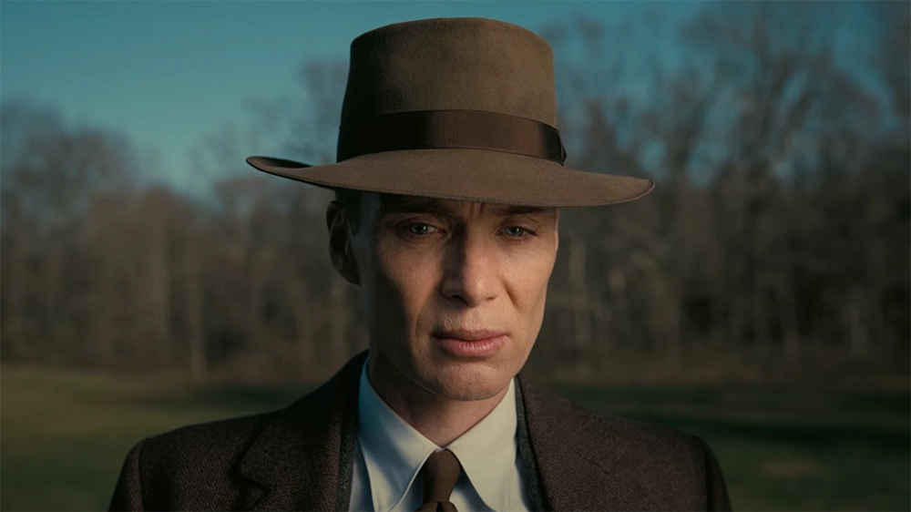
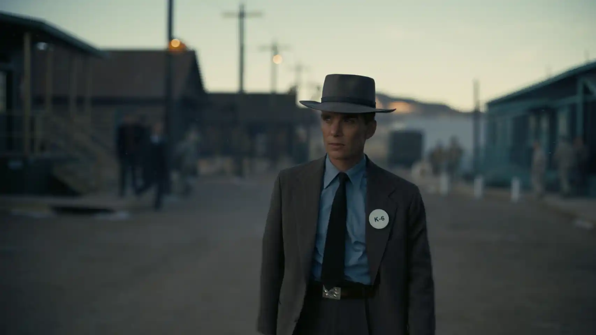
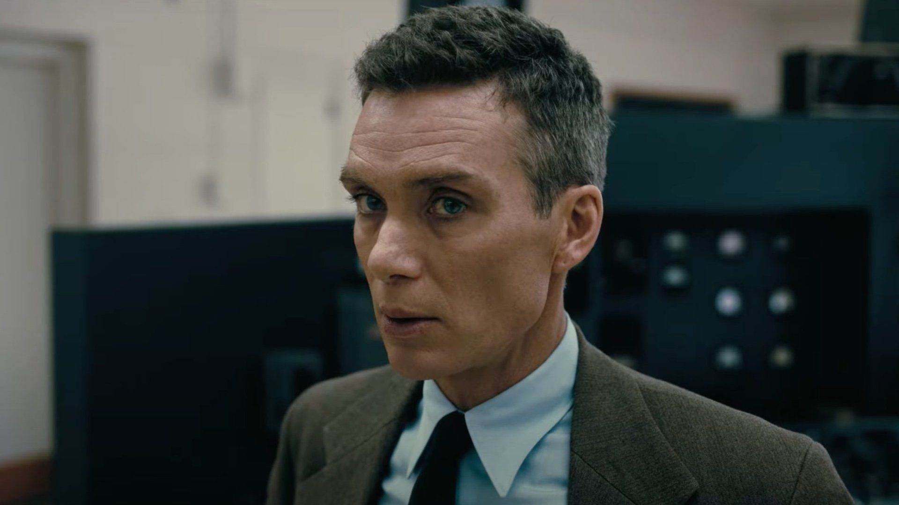
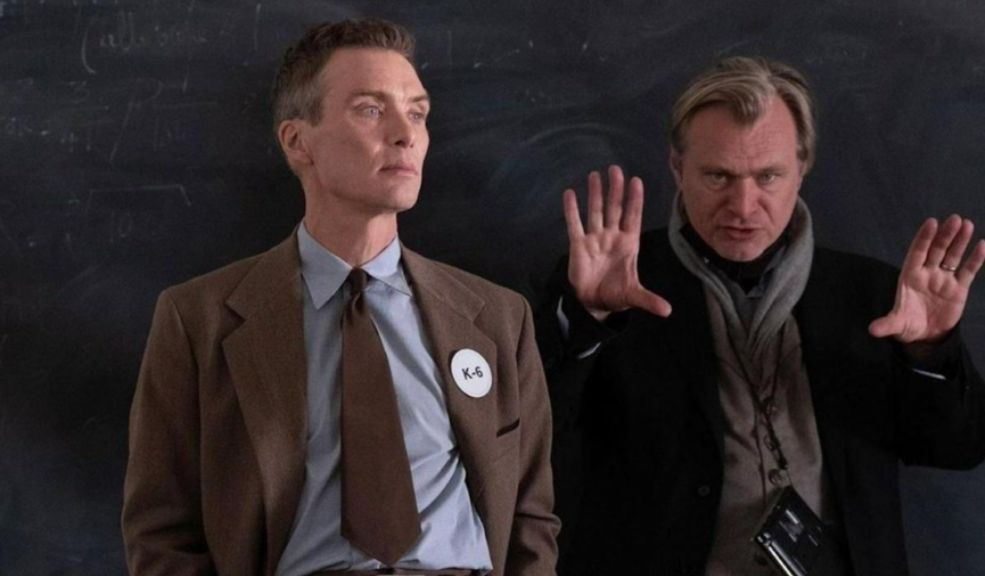
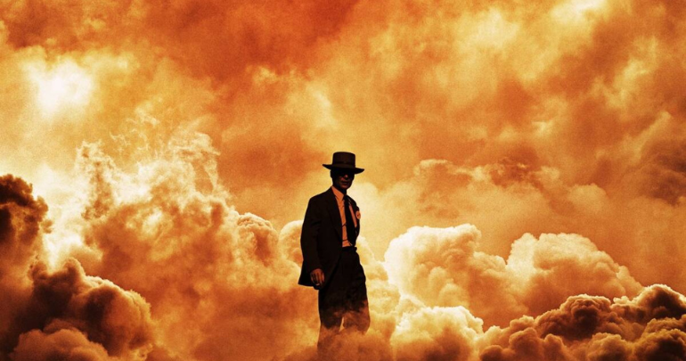
Aca se ven fotos de Nicky, en una de las fotos aparece junto a Rosalia e Ibai, en s ultimo gran evento.
Nicole Denise Cucco, conocida artísticamente como Nicki Nicole, es una cantante, rapera y compositora argentina. En 2019, saltó a la fama con el sencillo «Wapo traketero», logrando obtener millones de reproducciones en YouTube en un corto período de tiempo después de ser publicado.
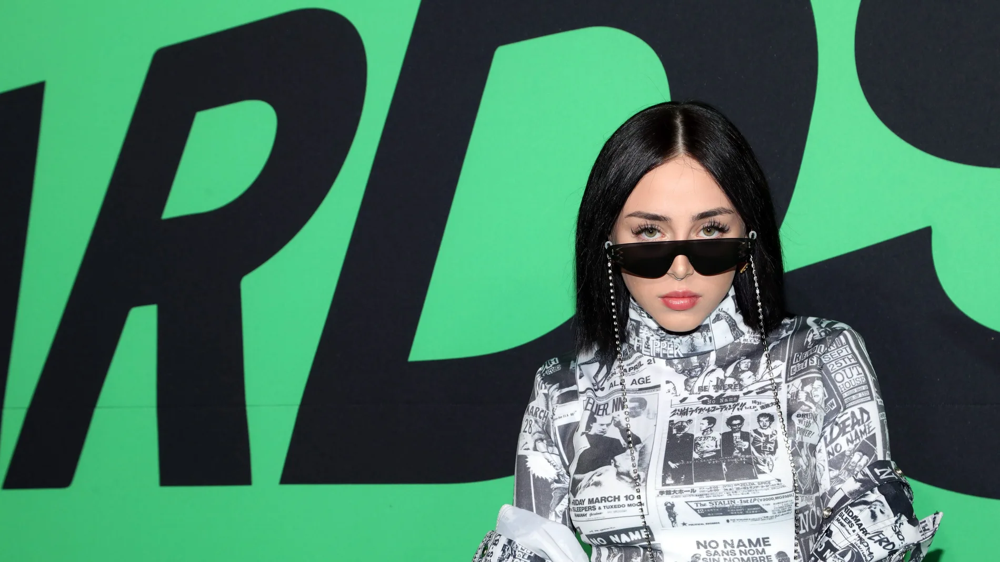
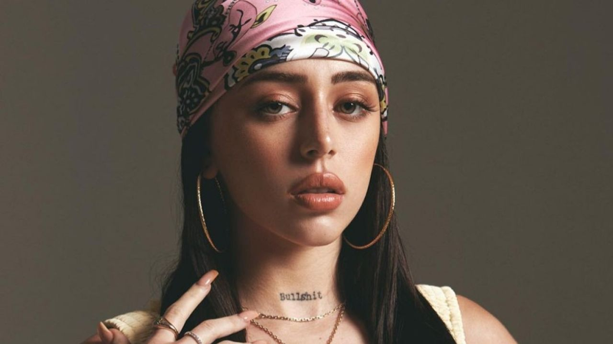
Estas son fotos de la banda, algunas son de books viejos que se hicieron para albumes como "Hola Mundo"
Tan Biónica es un grupo musical argentino surgido en Buenos Aires en el año 2002 formado por Chano, Seby, Bambi y Diega. Desde 2016 el grupo estuvo en un impasse hasta el 17 de marzo de 2023, cuando Chano se presentó en el Festival Lollapalooza y anunció oficialmente el regreso de la banda.
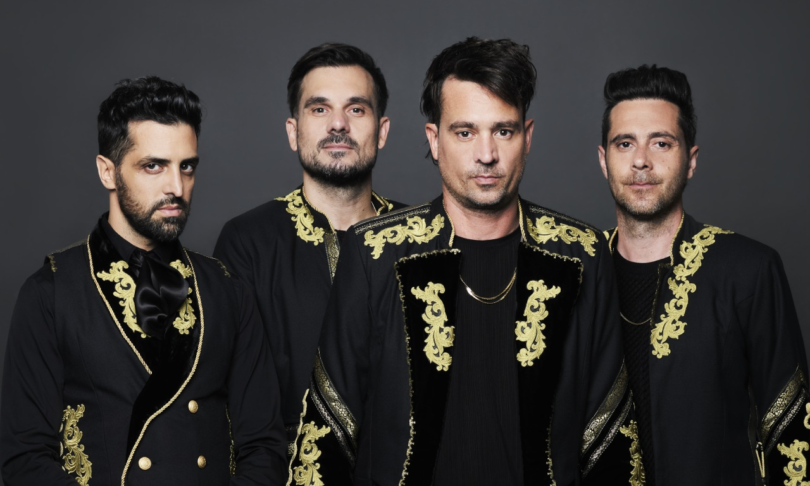
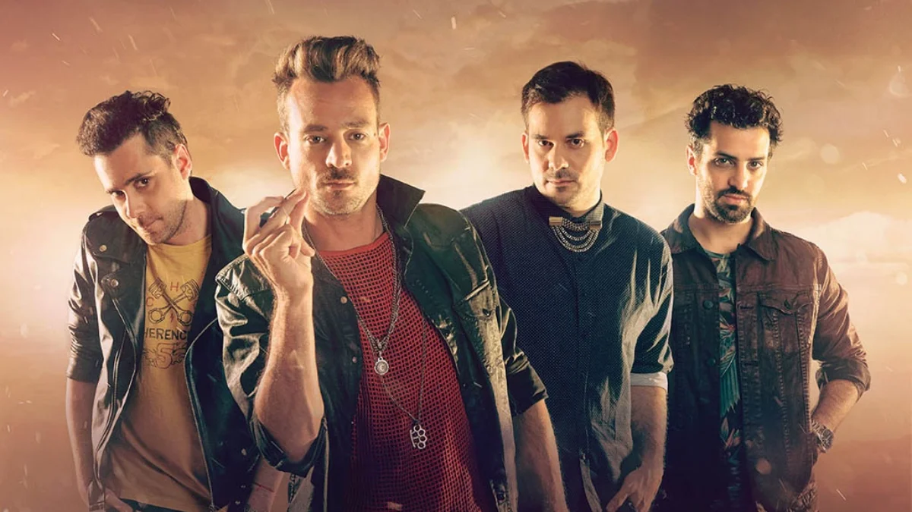
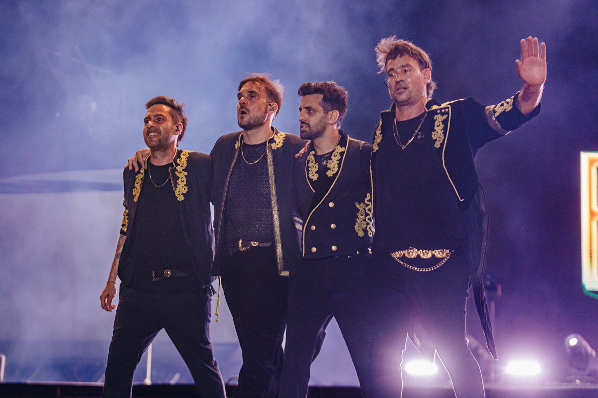
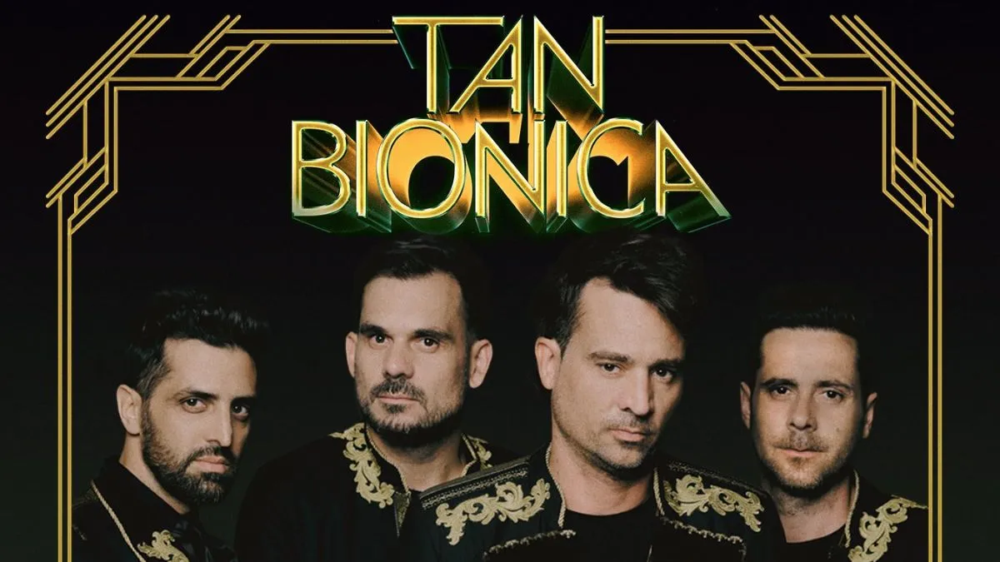
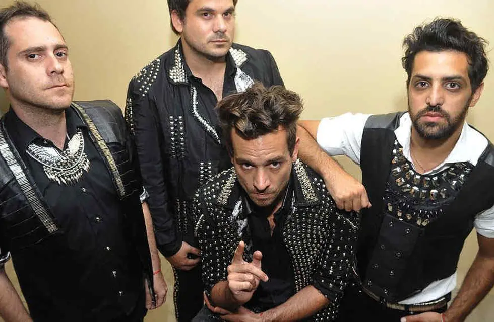
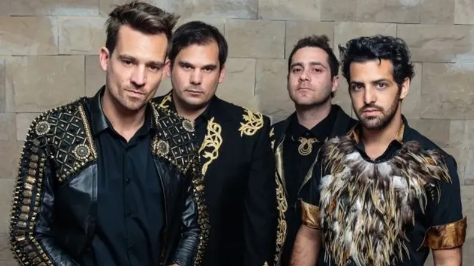